Apostilas
27 de novembro de 2025
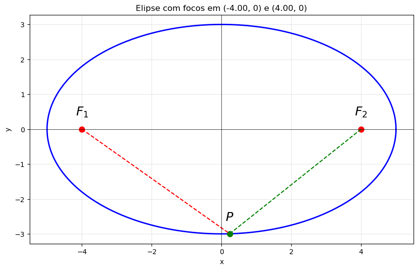
Definição 1 A elipse com focos em \(F_1\) e \(F_2\) é o lugar geométrico dos pontos \(P\) tais que a soma das distâncias a \(F_1\) e \(F_2\) é constante: \[ \|\vec{PF_1}\| + \|\vec{PF_2}\| = 2a, \] onde \(2a\) é o eixo maior da elipse.
A equação da elipse com focos em \(F_1=(-c,0)\) e \(F_2=(c,0)\) e eixo maior \(2a\) é \[ \frac{x^2}{a^2} + \frac{y^2}{b^2} = 1, \] onde \(b^2 = a^2 - c^2\).
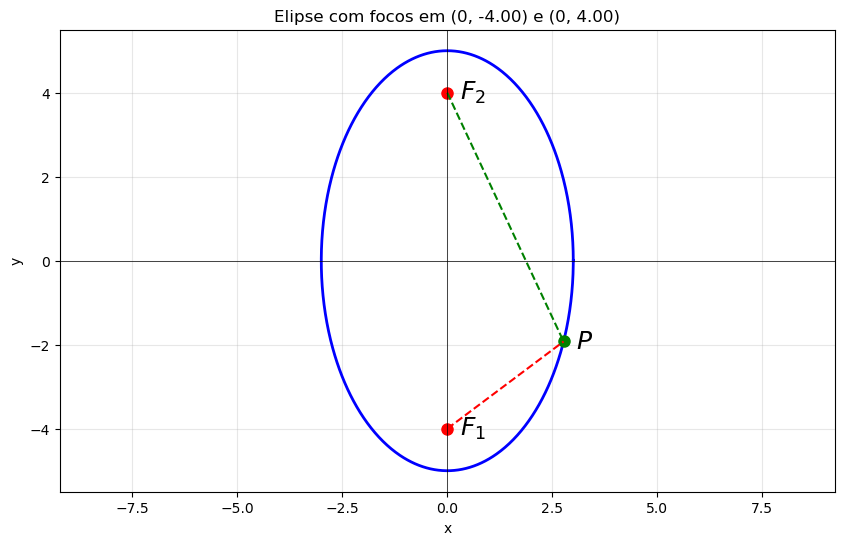
A equação da elipse com focos em \(F_1=(0,-c)\) e \(F_2=(0,c)\) e eixo maior \(2a\) é \[ \frac{x^2}{b^2} + \frac{y^2}{a^2} = 1, \] onde \(b^2 = a^2 - c^2\).
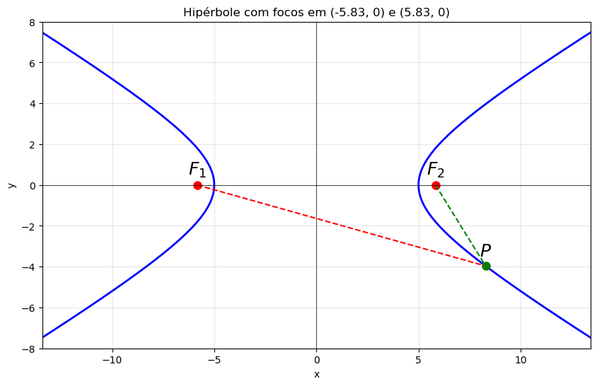
Definição 2 A hipérbole com focos em \(F_1\) e \(F_2\) é o lugar geométrico dos pontos \(P\) tais que o valor absoluto da diferença das distâncias a \(F_1\) e \(F_2\) é constante: \[ \left| \|\vec{PF_1}\| - \|\vec{PF_2}\| \right| = 2a, \] onde \(2a\) é o eixo real da hipérbole.
A equação da hipérbole com focos em \(F_1=(-c,0)\) e \(F_2=(c,0)\) e eixo real \(2a\) é \[ \frac{x^2}{a^2} - \frac{y^2}{b^2} = 1, \] onde \(b^2 = c^2 - a^2\).
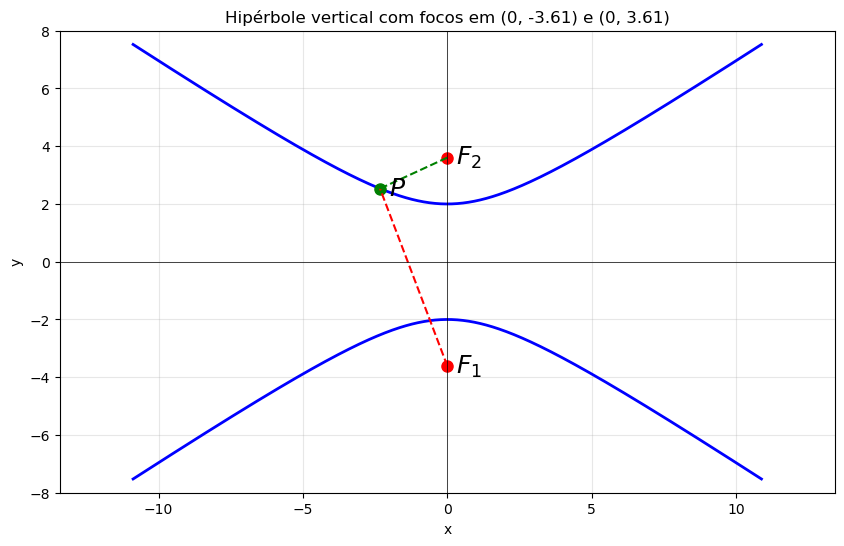
A equação da hipérbole com focos em \(F_1=(0,-c)\) e \(F_2=(0,c)\) e eixo real \(2a\) é \[ -\frac{x^2}{b^2} + \frac{y^2}{a^2} = 1, \] onde \(b^2 = c^2 - a^2\).
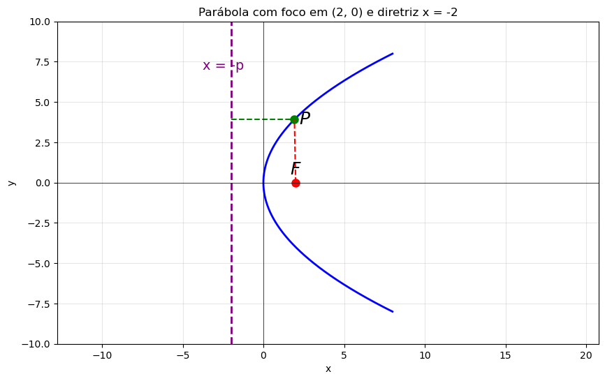
Definição 3 A parábola com foco em \(F\) e diretriz \(\ell\) é o lugar geométrico dos pontos \(P\) tais que a distância a \(F\) é igual à distância à reta \(\ell\): \[ \|\vec{PF}\| = \mathrm{dist}(P,\ell). \]
A equação da parábola com foco em \(F=(p,0)\) e diretriz \(x=-p\) é \[ y^2 = 4px. \]
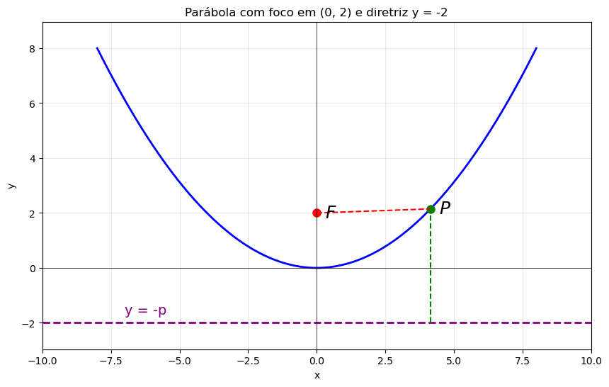
A equação da parábola com foco em \(F=(0,p)\) e diretriz \(y=-p\) é \[ x^2 = 4py. \]
Estas curvas são chamadas de seções cônicas porque podem ser obtidas como interseções de um plano com um cone duplo.
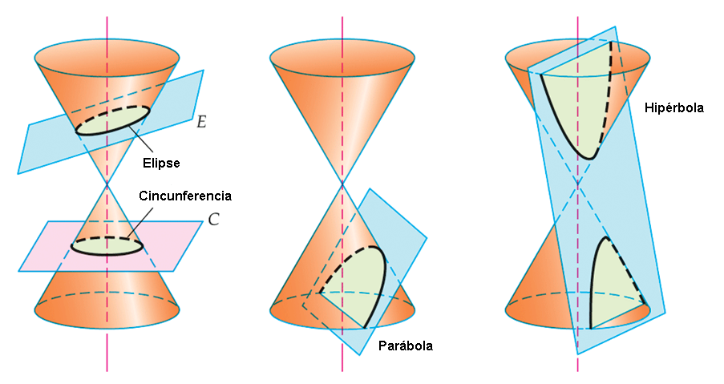
Equações quadráticas em duas variáveis tem a forma geral \[ Ax^2 + Bxy + Cy^2 + Dx + Ey + F = 0. \]
Estas equações determinam uma curva no plano \(xy\). Exemplos
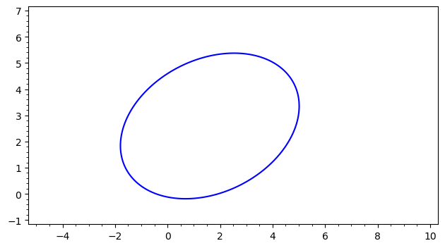
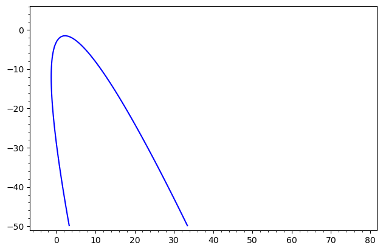
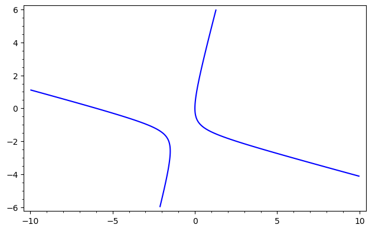
É um fato que cada equação quadrática (não degenerada) em duas variáveis representa uma seção cônica.
Problemas:
\[ x^2 - 6x + y^2 - 4y + 9 = 0 \] obtemos
\[ (x-3)^2 + (y-2)^2 = 4 \]
Equação de uma circunferência com centro em \(A=(3,2)\) e raio \(2\). Está no primeiro quadrante e é tangente ao eixo \(x\).
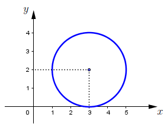
Completando os quadrados em \[ x^2 + 8x + y^2 - 6y = 0 \] obtemos
\[(x+4)^2 + (y-3)^2 = 25 \] Circunferência com centro em \(A=(-4,3)\) e raio \(5\). Passa pela origem.
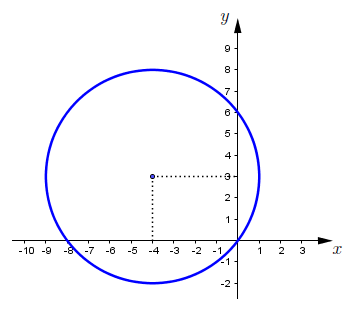
A curva \[ y = x^2 + 2x - 3 = (x+3)(x-1) = (x+1)^2 - 4 \] é uma parábola côncava para cima, com raízes em \(x=-3\) e \(x=1\) e vértice em \(V=(-1,-4)\).
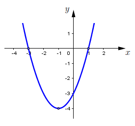
\[ y = -x^2 + 4x - 4 = -(x-2)^2 \] é uma parábola côncava para baixo, com raiz real \(x=2\) e vértice \(V=(2,0)\).
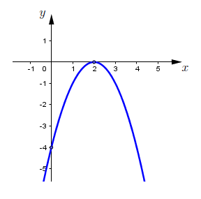
\[ x = y^2 - 4y + 3 = (y-1)(y-3) = (y-2)^2 - 1. \] Considerando \(x\) como função de \(y\), o gráfico é uma parábola côncava para a direita, com raízes \(y=1\), \(y=3\) e vértice \(V=(-1,2)\).
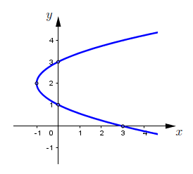
\[x = -y^2 - 2y + 8 = -(y+4)(y-2) = -(y+1)^2 + 9.\] Tomando \(x\) como função de \(y\), parábola côncava para a esquerda, raízes \(y=2\), \(y=-4\), vértice \(V=(9,-1)\).
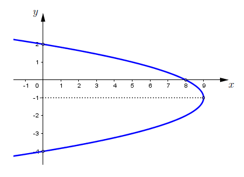
Completando os quadrados em \[ 4x^2 - 8x + y^2 - 4y + 4 = 0 \Rightarrow (x-1)^2 + \frac{(y-2)^2}{4} = 1 \] Elipse centrada em \(A=(1,2)\), semieixo horizontal \(a=1\) e vertical \(b=2\). Está no primeiro quadrante e tangente aos eixos.
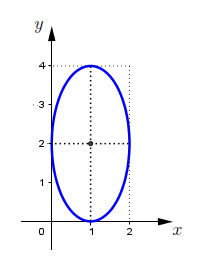
Completando os quadrados em \[ 4x^2 + 24x + 9y^2 + 36y + 36 = 0 \] obtemos
\[ \frac{(x+3)^2}{9} + \frac{(y+2)^2}{4} = 1 \]
Elipse centrada em \(A=(-3,-2)\), semieixo horizontal \(a=3\) e vertical \(b=2\). Está no terceiro quadrante e tangente aos eixos.
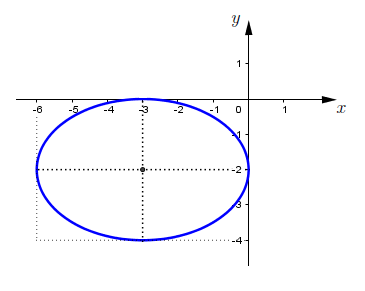
Completando os quadrados em \[9x^2 + 72x + 16y^2 = 0\] obtemos
\[ \frac{(x+4)^2}{16} + \frac{y^2}{9} = 1 \]
Elipse centrada em \(A=(-4,0)\), semieixo horizontal \(a=4\) e vertical \(b=3\). Passa pela origem e é tangente ao eixo \(y\).
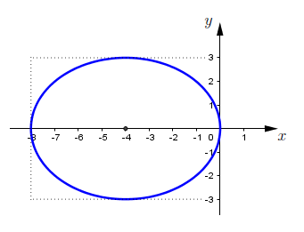
Completando os quadrados em \[3x^2 - 12x + 4y^2 + 24y = 0\] obtemos
\[ \frac{(x-2)^2}{16} + \frac{(y+3)^2}{12} = 1 \] Elipse centrada em \(A=(2,-3)\), semieixo horizontal \(a=4\) e vertical \(b=\sqrt{12}\). Passa pela origem, intersecta eixo \(x\) em \((4,0)\) e eixo \(y\) em \((0,-6)\).
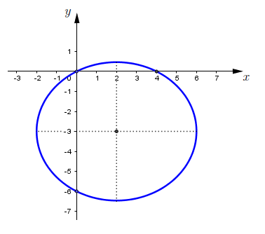
Completando os quadrados em \[x^2 + 4x - y^2 + 2y - 1 = 0\] obtemos
\[ \frac{(x+2)^2}{4} - \frac{(y-1)^2}{4} = 1 \]
Hipérbole centrada em \(A=(-2,1)\) com focos sobre \(y=1\). Retas assíntotas: \(y=x+3\) e \(y=-x-1\).
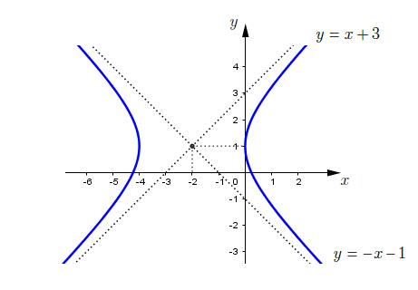
Completando os quadrados em \[x^2 - 4x - 4y^2 + 8 = 0\] obtemos
\[ -\frac{(x-2)^2}{4} + y^2 = 1 \]
Hipérbole centrada em \(A=(2,0)\) com focos sobre \(x=2\). Assíntotas: \(y=\frac{x}{2}-1\) e \(y=-\frac{x}{2}+1\).
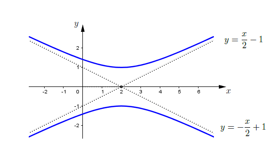
Os exemplos anteriores não possuem o termo misto \(Bxy\) e isso simplifica a análise. A seguir temos exemplos com termo misto.
Considere por exemplo a equação \[ 3x^2+2\sqrt{3}xy+y^2+2x-2\sqrt{3}y=0. \] Note que temos o termo misto \(2\sqrt{3}xy\). Para eliminar este termo misto, escrevemos a equação na forma matricial: \[ \begin{bmatrix}x & y \end{bmatrix} \begin{bmatrix}3 & \sqrt{3} \\ \sqrt{3} & 1 \end{bmatrix} \begin{bmatrix}x \\ y \end{bmatrix}+ \begin{bmatrix}2 & -2\sqrt{3} \end{bmatrix} \begin{bmatrix}x \\ y \end{bmatrix}=X^t A X+KX=0 \] onde \[ X=\begin{bmatrix}x \\ y \end{bmatrix},\quad A=\begin{bmatrix}3 & \sqrt{3} \\ \sqrt{3} & 1 \end{bmatrix},\quad K=\begin{bmatrix}2 & -2\sqrt{3} \end{bmatrix}. \]
Note que a matriz \(A\) é simétrica. Podemos diagonalizá-la usando uma matriz ortogonal \(P\) tal que \[ P^t A P = D, \] onde \(D\) é uma matriz diagonal. As colunas de \(Q\) são os autovetores de \(P\) e os elementos da diagonal de \(D\) são os autovalores de \(P\).
Calculando os autovalores e autovetores de \(P\) obtemos \[
P = \begin{bmatrix}
\sqrt{3}/{2} & -1/2 \\
1/2 & \sqrt{3}/2
\end{bmatrix},\quad
D = \begin{bmatrix}4 & 0 \\
0 & 0
\end{bmatrix}.
\]
A matriz \(P\) representa uma rotação de \(30^\circ\) no sentido anti-horário.
Daqui, obtemos que \[ A=P D P^t. \]
Seja \[ X'=\begin{bmatrix}x' \\ y'\end{bmatrix}=P^t X=\begin{bmatrix} \sqrt{3}/{2} & 1/2 \\ -1/2 & \sqrt{3}/2 \end{bmatrix}\begin{bmatrix}x \\ y\end{bmatrix}=\begin{bmatrix} \sqrt{3}/2 x + 1/2 y \\ -1/2 x + \sqrt{3}/2 y \end{bmatrix}. \]
A equação quadrática pode ser escrita como \[\begin{align*} 0&=3x^2+2\sqrt{3}xy+y^2+2x-2\sqrt{3}y\\ &=X^t A X + K X =X^t P D P^t X + K P P^t X \\ &=(P^tX)^t D (P^t X) + K P(P^t X) ={X'}^t D X' + K' X', \end{align*}\] onde \(K' = K P\). Calculando \(K'\) obtemos \[ K' = \begin{bmatrix}0 & -4 \end{bmatrix}. \] Assim, a equação quadrática na nova base é \[ 4{x'}^2 -4 y' = 0\quad \Rightarrow \quad y'={x'}^2. \] Esta é a equação de uma parábola para cima, com vértice na origem.
A curva no exemplo anterior foi caraterizada pelas equações \[\begin{align*} 3x^2+2\sqrt{3}xy+y^2+2x-2\sqrt{3}y&=0\\ y' &= {x'}^2 \end{align*}\]
A parábola pode ser visualisada no seguinte gráfico:
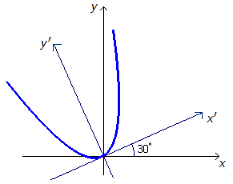
Por que o interesse em diagonalizar matrizes simétricas?
Temos por objetivo caracterizar e desenhar o conjunto solução de uma equação geral do segundo grau em duas variáveis
\[ax^2 + bxy + cy^2 + dx + ey = f\]
Esta equação pode ser escrita na forma
\[\left[\begin{array}{cc} x & y \end{array}\right] \left[\begin{array}{cc} a & \frac{b}{2} \\ \frac{b}{2} & c \end{array}\right] \left[\begin{array}{c} x \\ y \end{array}\right]\ +\ \left[\begin{array}{cc} d & e \end{array}\right] \left[\begin{array}{c} x \\ y \end{array}\right]\ =\ f\]
Observe que o fator \(b\) atrapalha pois se \(b \neq 0\) obtemos uma equação com o termo \(xy\) que dificulta a análise.
\[ax^2 + bxy + cy^2 + dx + ey = f\]
Pode ser escrita na forma
\[\left[\begin{array}{cc} x & y \end{array}\right] \left[\begin{array}{cc} a & \frac{b}{2} \\ \frac{b}{2} & c \end{array}\right] \left[\begin{array}{c} x \\ y \end{array}\right]\ +\ \left[\begin{array}{cc} d & e \end{array}\right] \left[\begin{array}{c} x \\ y \end{array}\right]\ =\ f\]
Chamando
\[A = \left[\begin{array}{cc} a & \frac{b}{2} \\ \frac{b}{2} & c \end{array}\right] \ \ \ \ \ X = \left[\begin{array}{c} x \\ y \end{array}\right] \ \ \ \ \ K = \left[\begin{array}{cc} d & e \end{array}\right]\]
a equação também pode ser escrita na forma resumida
\[\boxed{X^t A X + KX = f}\]
\[ax^2 + bxy + cy^2 + dx + ey = f\]
Pode ser escrita na forma resumida
\[\boxed{X^t A X + KX = f}\]
Como \(A\) é uma matriz simétrica, existe uma matriz ortogonal \(P\), cujas colunas são vetores ortogonais e unitários, e existe uma matriz diagonal \(D\) tais que
\[\boxed{A=PDP^t}\]
Substituindo na equação geral dada, obtemos
\[X^t (PDP^t) X + KX = f\] \[(X^tP) D (P^tX) + KX = f\] \[(P^tX)^t D (P^tX) + KP(P^tX) = f\]
\[(P^tX)^t D (P^tX) + KP(P^tX) = f\]
Fazemos agora a mudança de variáveis \(X'= \left[\begin{array}{c} x' \\ y' \end{array}\right]\) tal que
\[\boxed{X' = P^tX}\ \ \ {\rm e}\ \ \ \boxed{PX' = X}\]
Substituindo na equação acima, vemos que a equação geral do segundo grau fica expressa do seguinte modo nas variáveis \(x'\) e \(y'\).
\[\boxed{ {X'}^t D X' + KP X' = f}\]
Observe que esta é uma equação geral do segundo grau nas variáveis \(x'\) e \(y'\). Mas agora a matriz \(D\) é diagonal e portanto nesta equação não aparece a parcela \(x'y'\).
Portanto, no sistema de coordenadas \((x',y')\) a equação passa a ter uma expressão mais simples.
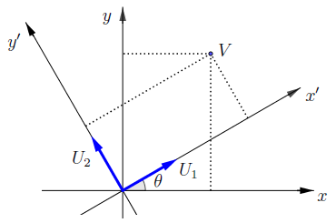
\[P X' = X \ \ \ \Rightarrow \ \ \ \left[\begin{array}{cr} \cos\theta & -\operatorname{sen}\theta \\ \operatorname{sen}\theta & \cos\theta \end{array}\right] \left[\begin{array}{cc} x' \\ y' \end{array}\right]\ =\ \left[\begin{array}{cc} x \\ y \end{array}\right]\]
Exemplo. Use a teoria de diagonalização para simplificar a seguinte equação e faça um esboço do conjunto solução.
\[8x^2 - 12xy + 17y^2 - 8\sqrt{5}x - 4\sqrt{5}y = 0\]
Matricialmente a equação dada tem a forma
\[\left[\begin{array}{cc} x & y \end{array}\right] \left[\begin{array}{rr} 8 & -6 \\ -6 & 17 \end{array}\right] \left[\begin{array}{c} x \\ y \end{array}\right]\ +\ \left[\begin{array}{cc} -8\sqrt{5} & -4\sqrt{5} \end{array}\right] \left[\begin{array}{c} x \\ y \end{array}\right]\ =\ 0\]
Precisamos diagonalizar a matriz
\[A = \left[\begin{array}{rr} 8 & -6 \\ -6 & 17 \end{array}\right]\]
Para isso, calcule matriz diagonal \(D\) e matriz ortogonal \(P\) que diagonalizam \(A\).
\(\bullet\) Polinômio característico
\[p(\lambda) = \det \left[ \begin{array}{cc} 8-\lambda & -6 \\ -6 & 17-\lambda \end{array} \right] = \lambda^2 - 25\lambda + 100\]
\(\bullet\) Autovalores. \(p(\lambda) = \lambda^2 - 25\lambda + 100 = 0\) \(\Leftrightarrow\) \(\lambda=5\) e \(\lambda=20\).
\(\bullet\) Autovetores para \(\lambda=5\).
\[\left[ \begin{array}{rr} 3 & -6 \\ -6 & 12 \end{array} \right]\begin{bmatrix} x \\ y \end{bmatrix} = \begin{bmatrix}0 \\ 0 \end{bmatrix}\]
Nesse caso obtemos a reta de equação \(y=x/2\).
\(\bullet\) Autovetores para \(\lambda=20\).
\[\left[ \begin{array}{rr} -12 & -6 \\ -6 & -3 \end{array} \right]\begin{bmatrix} x \\ y \end{bmatrix} = \begin{bmatrix}0 \\ 0 \end{bmatrix}\]
Nesse caso obtemos a reta perpendicular, de equação \(y=-2x\).
\(\bullet\) Vetores unitários nas direções destas retas são
\[U_1\ =\ \left[\begin{array}{c} 2\sqrt{5}/5\\ \\ \sqrt{5}/5 \end{array}\right]\ \ \ \ \ \ \ \ U_2\ =\ \left[\begin{array}{c} -\sqrt{5}/5\\ \\ 2\sqrt{5}/5 \end{array}\right]\]
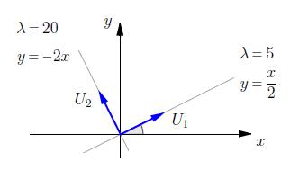
\(\bullet\) Matrizes \(P\) e \(D\) que diagonalizam \(A\).
\[D = \left[\begin{array}{cc} 5 & 0\\ 0 & 20 \end{array}\right] \ \ \ \ \ \ \ \ \ \ P = \left[\begin{array}{ccc} 2\sqrt{5}/5 & & -\sqrt{5}/5\\ \\ \sqrt{5}/5 & & 2\sqrt{5}/5 \end{array}\right]\]
\(\bullet\) Efetuando a mudança de coordenadas \(X'= \left[\begin{array}{c} x' \\ y' \end{array}\right]\) tal que \(X' = P^tX\) sabemos que a equação quadrática dada passa a ter a forma \({X'}^t D X' + KP X' = 0\) no sistema de coordenadas \(x'y'\). Substituindo as matrizes calculadas, obtemos
\[\hspace{-0.5cm}\left[\begin{array}{cc} x' & y' \end{array}\right] \left[\begin{array}{cc} 5 & 0 \\ 0 & 20 \end{array}\right] \left[\begin{array}{c} x' \\ y' \end{array}\right]\ +\ \left[\begin{array}{cc} -8\sqrt{5} & -4\sqrt{5} \end{array}\right] \left[\begin{array}{ccc} 2\sqrt{5}/5 & & -\sqrt{5}/5\\ \\ \sqrt{5}/5 & & 2\sqrt{5}/5 \end{array}\right] \left[\begin{array}{c} x' \\ y' \end{array}\right] = 0\]
\(\bullet\) Efetuando as multiplicações obtemos \(5{x'}^2 + 20{y'}^2 - 20x' = 0\).
Dividindo por 5 e completando os quadrados obtemos a equação
\[\boxed{\dfrac{(x'-2)^2}{4} + {y'}^2 = 1}\]
Essa é a equação da elipse centrada no ponto \(A=(2,0)\), de semieixo horizontal \(a=2\) e semieixo vertical \(b=1\), representada logo abaixo.
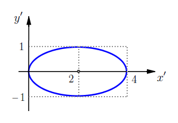
\(\bullet\) Para representar, no sistema de coordenadas \(xy\), o conjunto solução da equação dada nessa questão, basta efetuar uma rotação do gráfico dessa elipse
\[\dfrac{(x-2)^2}{4} + y^2 = 1\]
De modo que os eixos fiquem sobre as retas \(y=x/2\) e \(y=-2x\). Essa rotação é de aproximadamente \(26^o\).
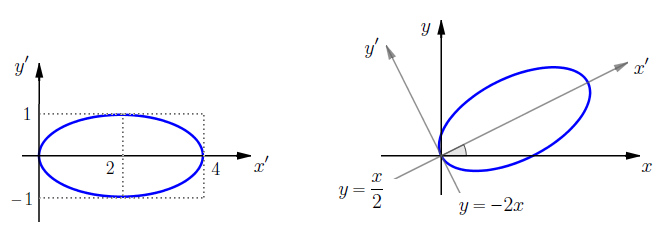